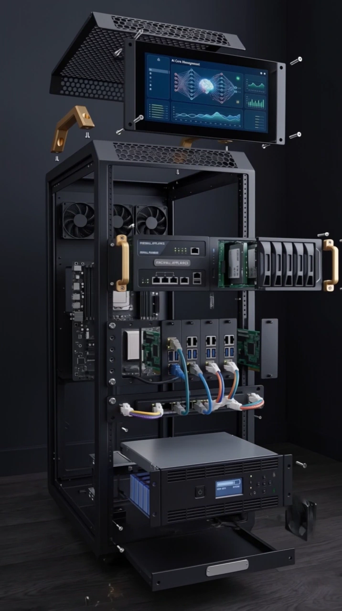

Provisionnement
Trois VPS nus deviennent un cluster, en une commande Ansible.
Ansible · kubeadm · containerd · Cilium · Helm
J’administre des systèmes et des réseaux depuis trois ans, et je conçois des plateformes que j’instrumente pour qu’une attaque y laisse une trace exploitable. Mon bagage est offensif, ma cible est la défense.
Trois ans d’administration systèmes et réseaux sur des parcs clients en production, après deux ans de développement web. Chaque équipement de cette baie correspond à une part réelle du travail — le socle, le lien, la sonde, la règle.
Serveurs physiques et virtuels installés selon le besoin métier, Windows Server et Linux maintenus en condition, sauvegardes réellement restaurées. L’infrastructure ordinaire, tenue correctement.
Commutateurs Aruba, Zyxel et UniFi, pare-feu Sophos, segmentation en VLAN. Et entre les sites, des tunnels WireGuard orchestrés par NetBird : aucun port entrant ouvert chez le client.
Un cluster K3s collecte les métriques, les journaux et les alertes de sécurité de tous les parcs. Zabbix tient les seuils, rsyslog centralise les journaux, Wazuh remonte les écarts. L’enquête commence avant le téléphone.
Je sais exécuter l’attaque à la main — injection SQL, inclusion de fichier, élévation de privilèges. Je m’en sers pour écrire la règle qui la détecte : Kyverno à l’admission, Falco à l’exécution, Sigma dans les journaux.
La baie n’est pas un décor. Chaque repère désigne un équipement réel, et ouvre la fiche du domaine qui lui correspond.

01 / 07
Cliquez un repère sur la baie
Cinq ans d’alternance : deux à écrire les applications, puis trois à tenir l’infrastructure qui les héberge, aujourd’hui la superviser.
Administrateur systèmes et réseaux · Serris
J’y monte une plateforme de supervision centralisée : un cluster K3s qui héberge le monitoring de l’infrastructure de tous les clients du cabinet.
Administrateur systèmes et réseaux · Ivry-sur-Seine
Deux ans sur l’infrastructure et la sécurité du parc : installation, exploitation, sauvegardes et pare-feu, avec le support aux utilisateurs comme fil rouge.
Analyste développeur · Paris
Le versant développement de mon parcours : concevoir des applications et comprendre le code de l’intérieur — ce qui sert directement à savoir où une application se casse.
Réseau social où les joueurs mettent leurs meilleures actions en compétition. Équipe de quatre : un product owner et deux développeurs sur l’application, moi sur la plateforme qui l’héberge.
Ma contribution est le socle : des playbooks Ansible qui montent un cluster Kubernetes multi-nœuds sur des VPS OVH — kubeadm et containerd sur les trois machines, Cilium comme CNI, Helm, puis Argo CD amorcé pour que tout le reste de la plateforme se déploie depuis le dépôt Git.
Trois VPS nus deviennent un cluster, en une commande Ansible.
Ansible · kubeadm · containerd · Cilium · Helm
Argo CD amorcé pointe sur le dépôt : le cluster se déploie seul.
Argo CD · Kustomize · ingress-nginx · cert-manager
Prévention à l’admission, détection à l’exécution, secrets hors dépôt.
Kyverno · Falco · Vault · Keycloak · TLS automatisé
Les trois signaux, pour pouvoir enquêter après coup.
Prometheus · Grafana · Loki · Tempo · KEDA
Pipeline GitLab de l’équipe. Je suis intervenu sur l’étape de deploy — la mise en service en production de l’image publiée à l’étape précédente.
Le sujet imposait une contrainte inhabituelle : aucun outil d’exploitation automatique. Ni sqlmap, ni scanner de vulnérabilités. Tout a dû être trouvé et exploité à la main — ce qui oblige à comprendre chaque faille au lieu de la subir.
28 vulnérabilités documentées et classées. Environnement pédagogique autorisé ; identifiants, hachages et noms d’hôtes volontairement absents.
Une PME n’a ni SOC, ni budget d’éditeur, ni équipe dédiée. La question n’est donc pas « quel outil acheter » mais « quelle mesure donne le plus de couverture par euro dépensé ». Tout le mémoire découle de ce cadrage.
Mémoire de Master 2 Architecte de systèmes d’information, soutenu à l’ETNA. Disponible sur demande.
Ce n’est pas une machine virtuelle qu’on allume pour un exercice. C’est une infrastructure permanente, avec ses pannes, ses mises à jour et ses sauvegardes — donc les mêmes contraintes qu’en production, à petite échelle.
Uniquement des dépôts ouverts : les projets contenant des secrets dans leur historique restent fermés et ne figurent pas ici.
Ouvert à l’administration systèmes & réseaux, à l’infrastructure & cloud, et à un poste d’analyste SOC · détection.